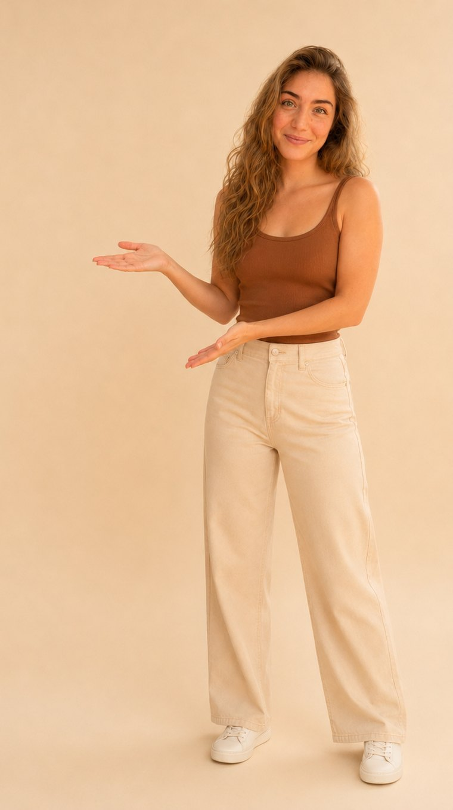
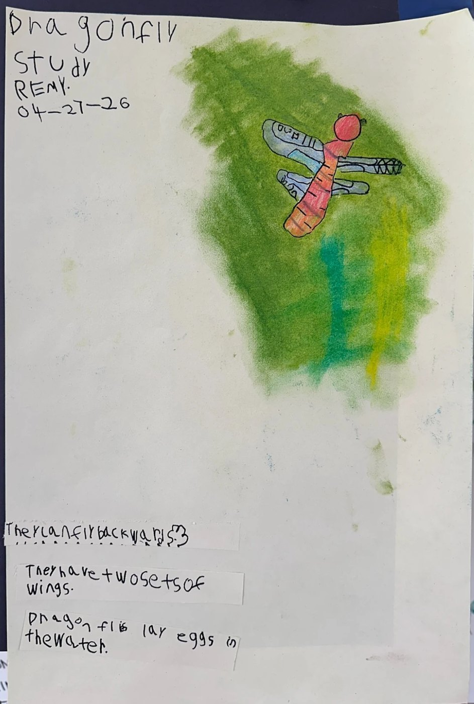
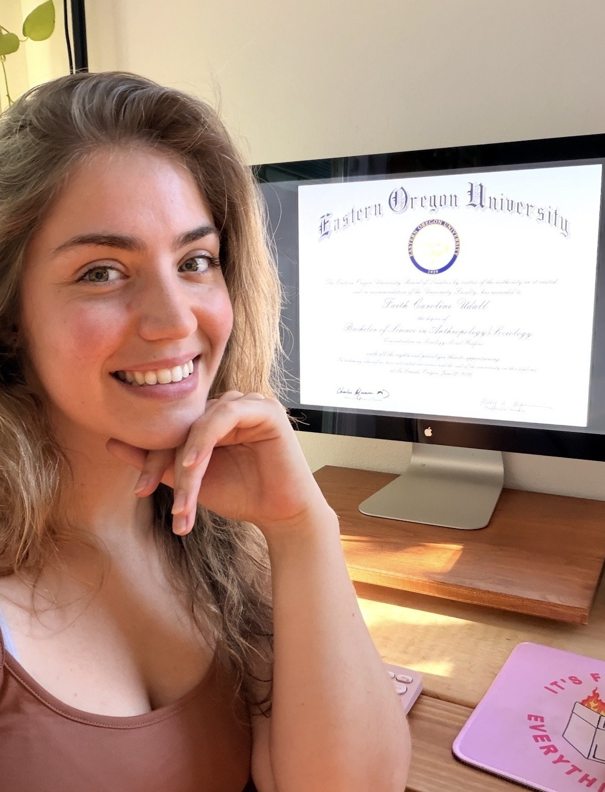
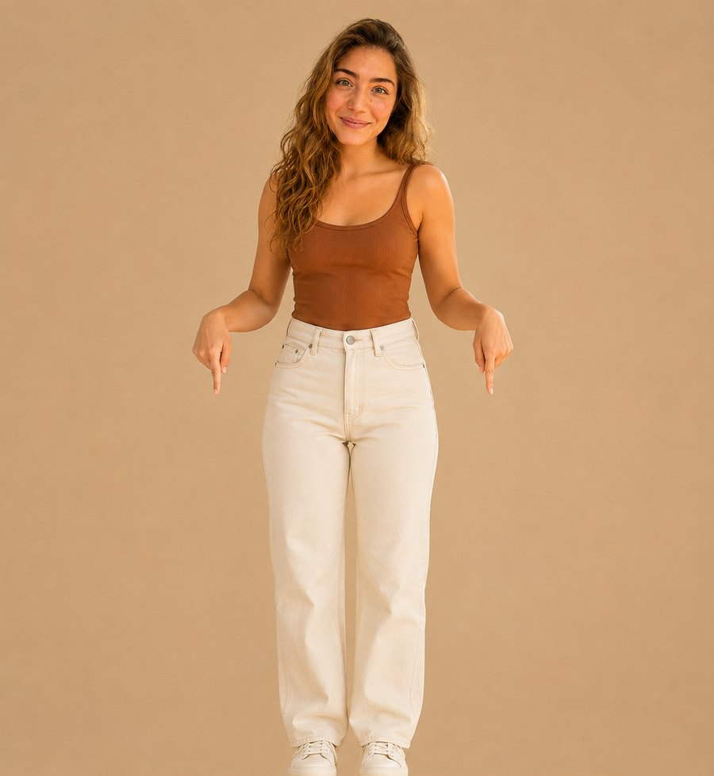

Ms. U’s Kinder Studio · 4-day micro-school for 8 students · Portland, OR
Helping small people feel big things: curiosity, confidence, and the nerve to try again. Children learn best when they feel known — so I built a room where every one of them is.
Founder & teacher · Enrolling our inaugural class

Rooted in the Gorge
Growing up in the Columbia River Gorge shaped a lifelong, visceral connection to the outdoors. The Pacific Northwest isn’t a backdrop — it’s where children learn, explore, and ground themselves in the physical world.
- RoleKindergarten Lead
- SchoolSmall Wonders
- TenureThird year
- EducationB.S. in Anthropology/Sociology, Social WelfareEastern Oregon University
- Reggio-inspired
- UFLI literacy
- Nature-based inquiry
Little moments, big deal



Ms. U’s Kinder Studio
A four-day transitional kindergarten in Portland, Oregon — one cohort, capped at eight.
- 8 students
- Mon–Thu
or write to hello@faithudall.com